Proyek Pembelajaran Berbasis Proyek (PbL) Bahasa Indonesia: Mengamati alur kejadian, mengurutkan 4 gambar, membuat Buku Cerita Akordeon, dan bercerita lisan dengan percaya diri di depan Miss & Mister.
Diambil langsung dari Dokumen Pedoman Resmi SD MISS Malang (PROJECT OUTLINE BAHASA INDONESIA GRADE 2).
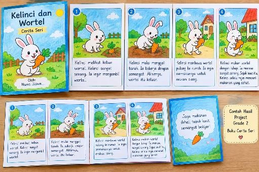
📸 Contoh Asli dari Guru: Buku Cerita Seri Akordeon 4 Panel Lengkap dengan Cover & Hiasan
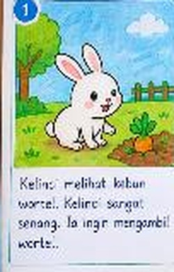
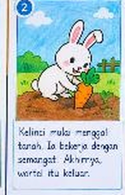
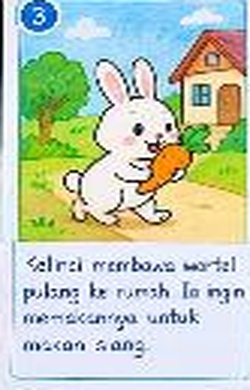
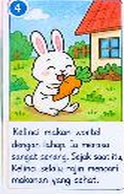
Bantu Laskar menyusun 4 gambar cerita kelinci yang teracak ini dari Urutan 1 (Awal) sampai Urutan 4 (Akhir)!
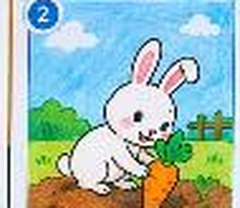
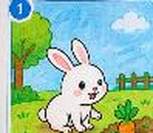
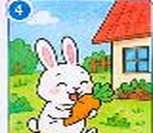
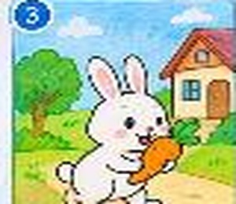
Cerita kegiatan sehari-hari Laskar: Bangun tidur, mandi air segar pakai gayung dari bak, dan menggosok gigi sampai bersih!
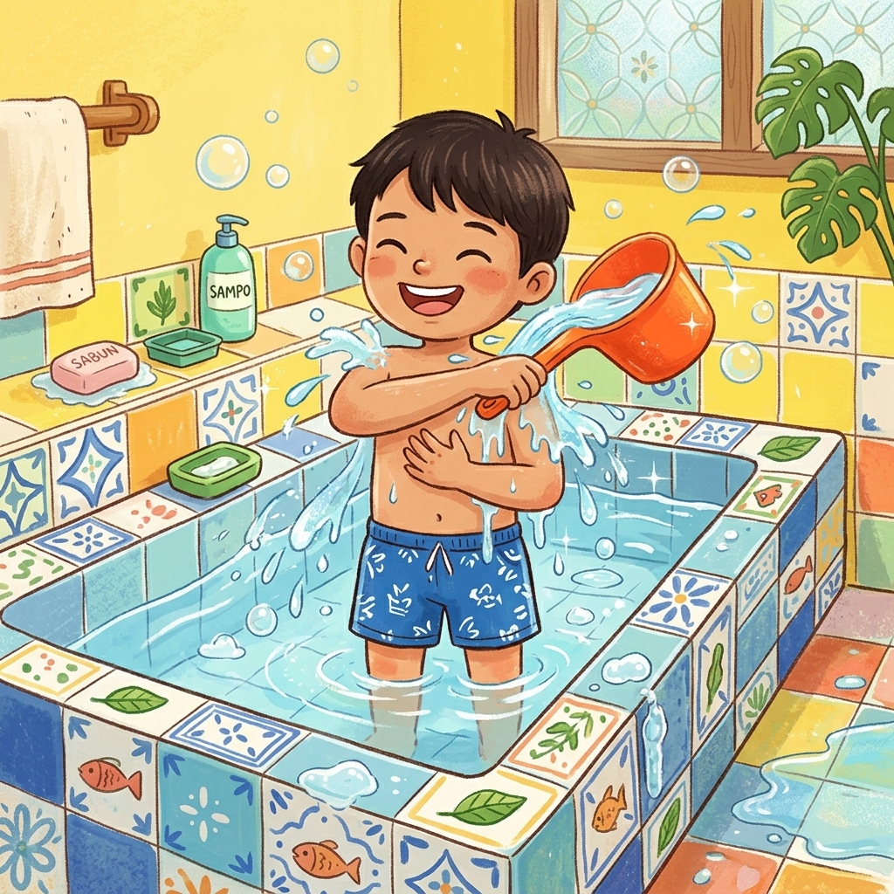
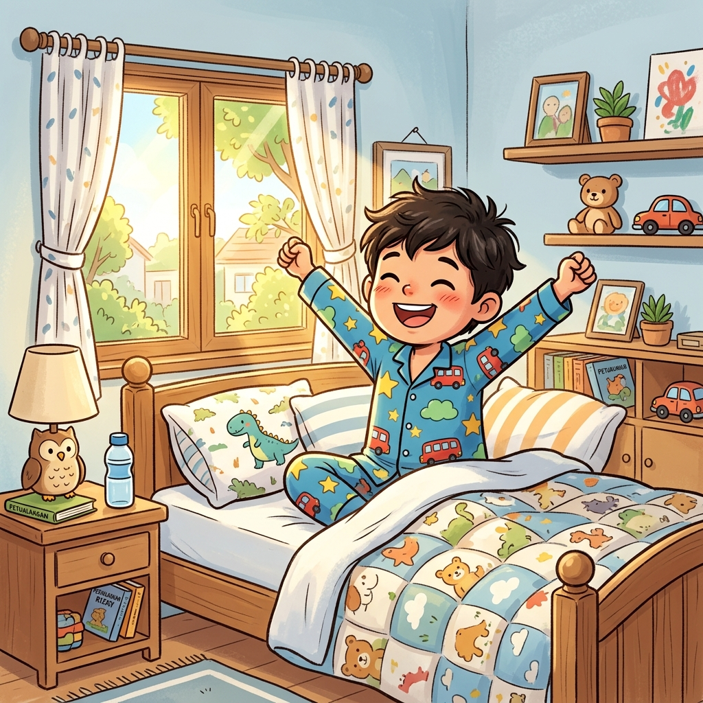
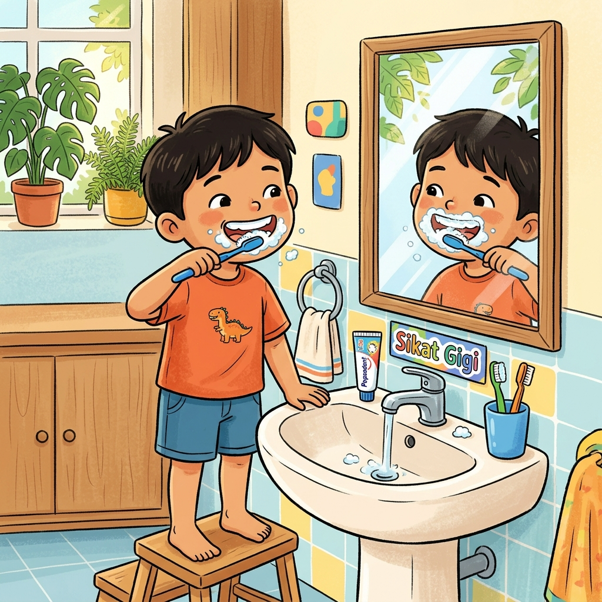
Naskah resmi cerita "Kelinci dan Wortel" yang mudah dihafal Laskar saat mempresentasikan karya di depan kelas.
Halaman di bawah ini sudah disetting pas ukuran kertas A4. Klik tombol di bawah untuk mencetak Template Buku Cerita Seri Akordeon "Kelinci dan Wortel" yang siap digunting, ditulis, dan dilipat oleh Laskar!
Petunjuk: Guntinglah 4 gambar di bawah ini dengan rapi mengikuti garis putus-putus ✂️
PROJECT WEEK TERM I TA 2026/2027 • BAHASA INDONESIA GRADE 2
Petunjuk Pengerjaan: Tempelkan 4 gambar seri yang sudah digunting secara berurutan, lalu tuliskan 2-3 kalimat penjelasan alur ceritanya pada baris bergaris di bawah setiap gambar!
| Kriteria Penilaian | Identifikasi Isi Gambar | Ketepatan Urutan Cerita | Kesesuaian Antar Gambar | Menceritakan Kembali | Kreativitas & Kerapian | Total Skor |
|---|---|---|---|---|---|---|
| Skor Maks (1-5) | ⭐⭐⭐⭐⭐ | ⭐⭐⭐⭐⭐ | ⭐⭐⭐⭐⭐ | ⭐⭐⭐⭐⭐ | ⭐⭐⭐⭐⭐ | 100 / A |
Yuk uji ingatan Laskar tentang alur cerita "Kelinci dan Wortel"!
Dianugerahkan dengan bangga kepada:
Telah berhasil menguasai urutan cerita bergambar 'Kelinci dan Wortel', siap menyusun buku akordeon dengan rapi, dan siap bercerita lisan dengan percaya diri di hadapan Miss & Mister!